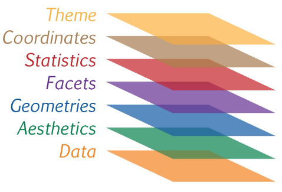
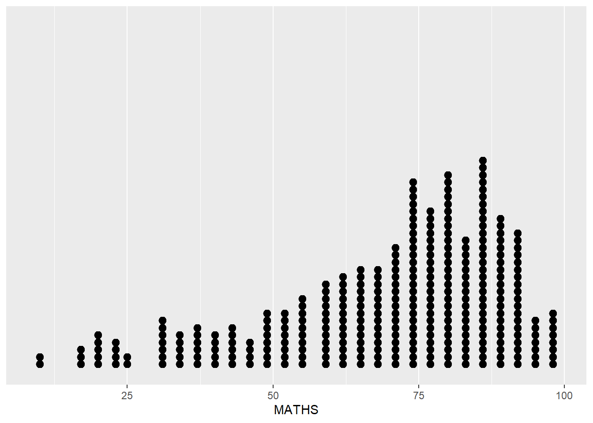
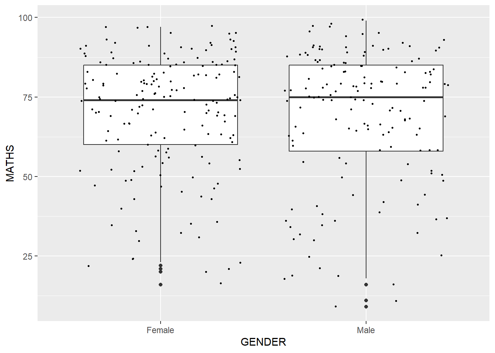
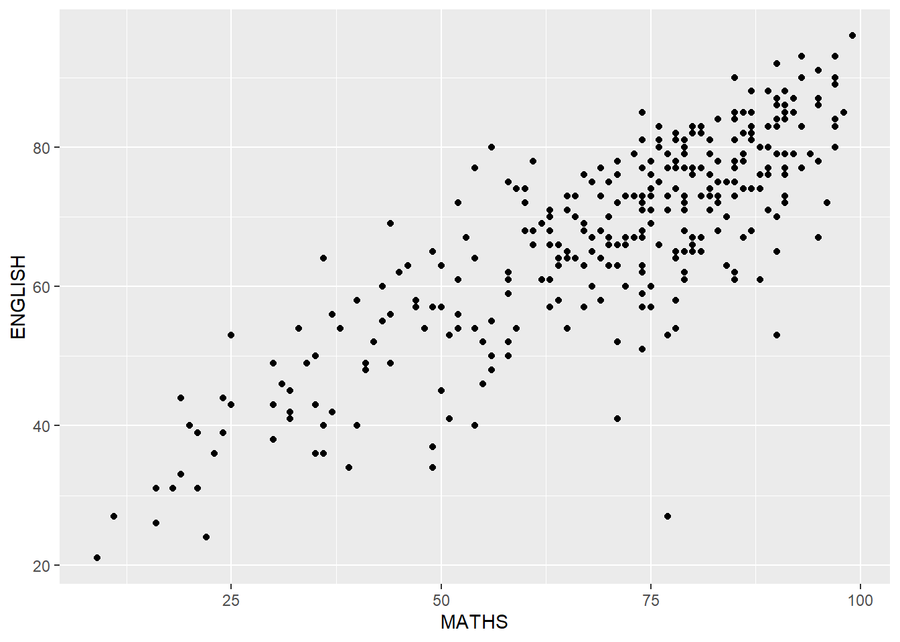
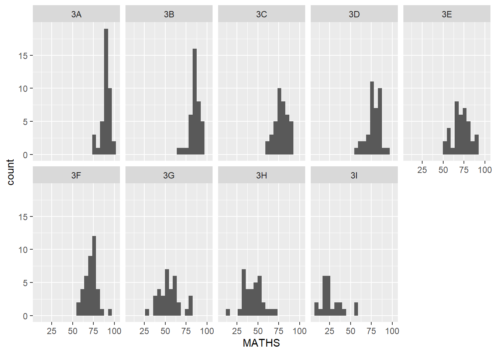

pacman::p_load(tidyverse)Hands-on Exercise 1
Introduction to ggplot2
1 Overview
In this exercise, we will learn the basic principles and essential components of ggplot2, and gain hands-on experience on using these components to plot statistical graphics based on the principle of Layered Grammar of Graphics.
2 Getting Started
2.1 Install and Launch R packages
2.2 Import Data
We will import Exan_data.csv into the R environment using read_csv() function of readr package. The dataset comprises of year end examination grades of a cohort of Primary 3 students.
exam_data <- read_csv('data/Exam_data.csv')We will examine the imported data below.
# A tibble: 6 × 7
ID CLASS GENDER RACE ENGLISH MATHS SCIENCE
<chr> <chr> <chr> <chr> <dbl> <dbl> <dbl>
1 Student321 3I Male Malay 21 9 15
2 Student305 3I Female Malay 24 22 16
3 Student289 3H Male Chinese 26 16 16
4 Student227 3F Male Chinese 27 77 31
5 Student318 3I Male Malay 27 11 25
6 Student306 3I Female Malay 31 16 16spc_tbl_ [322 × 7] (S3: spec_tbl_df/tbl_df/tbl/data.frame)
$ ID : chr [1:322] "Student321" "Student305" "Student289" "Student227" ...
$ CLASS : chr [1:322] "3I" "3I" "3H" "3F" ...
$ GENDER : chr [1:322] "Male" "Female" "Male" "Male" ...
$ RACE : chr [1:322] "Malay" "Malay" "Chinese" "Chinese" ...
$ ENGLISH: num [1:322] 21 24 26 27 27 31 31 31 33 34 ...
$ MATHS : num [1:322] 9 22 16 77 11 16 21 18 19 49 ...
$ SCIENCE: num [1:322] 15 16 16 31 25 16 25 27 15 37 ...
- attr(*, "spec")=
.. cols(
.. ID = col_character(),
.. CLASS = col_character(),
.. GENDER = col_character(),
.. RACE = col_character(),
.. ENGLISH = col_double(),
.. MATHS = col_double(),
.. SCIENCE = col_double()
.. )
- attr(*, "problems")=<externalptr> 3 Introduction to ggplot
3.1 Understand Grammer of Graphics
Before we getting started using ggplot2, it is important for us to understand the principles of Grammer of Graphics. Grammar of Graphics is a general scheme for data visualization which breaks up graphs into semantic components such as scales and layers.
There are two principles in Grammar of Graphics, they are:
- Graphics = distinct layers of grammatical elements
- Meaningful plots through aesthetic mapping
ggplot2 is an implementation of Grammar of Graphics. A short description of each building block are as follows:
- Data: The dataset being plotted.
- Aesthetics take attributes of the data and use them to influence visual characteristics, such as position, colours, size, shape, or transparency.
- Geometrics: The visual elements used for our data, such as point, bar or line.
- Facets split the data into subsets to create multiple variations of the same graph (paneling, multiple plots).
- Statistics, statiscal transformations that summarise data (e.g. mean, confidence intervals).
- Coordinate systems define the plane on which data are mapped on the graphic.
- Themes modify all non-data components of a plot, such as main title, sub-title, y-aixs title, or legend background.

3.2 Element: Data
Let us call the ggplot() function using the code chunk below.
ggplot(data=exam_data)
ggplot() initialises a ggplot object and a blank canvas appears. The data argument defines the dataset to be used for plotting.
3.3 Element: Aesthetic mappings
The aesthetic mappings take attributes of the data and and use them to influence visual characteristics, such as position, colour, size, shape, or transparency. Each visual characteristic can thus encode an aspect of the data and be used to convey information.
All aesthetics of a plot are specified in the aes() function call (in later part of this lesson, you will see that each geom layer can have its own aes specification)
Code chunk below adds the aesthetic element into the plot.
ggplot(data=exam_data,
aes(x=MATHS))
ggplot includes the x-axis and the axis’s label.
3.4 Element: Geom
Geometric objects are the actual marks we put on a plot. Examples include:
- geom_point for drawing individual points (e.g., a scatter plot)
- geom_line for drawing lines (e.g., for a line charts)
- geom_smooth for drawing smoothed lines (e.g., for simple trends or approximations)
- geom_bar for drawing bars (e.g., for bar charts)
- geom_histogram for drawing binned values (e.g. a histogram)
- geom_polygon for drawing arbitrary shapes
- geom_map for drawing polygons in the shape of a map! (You can access the data to use for these maps by using the map_data() function).
A plot must have at least one geom; there is no upper limit. You can add a geom to a plot using the + operator. For complete list, please refer to here.
3.4.1 Geom_bar()
ggplot(data=exam_data,
aes(x=RACE)) +
geom_bar()
3.4.2 Geom_dotplot()
In a dot plot, the width of a dot corresponds to the bin width (or maximum width, depending on the binning algorithm), and dots are stacked, with each dot representing one observation.
ggplot(data=exam_data,
aes(x=MATHS)) +
geom_dotplot(dotsize=0.5)
Note
The y-scale is not very useful, in fact misleading.
We will modify the chart using the below two steps:
scale_y_continuous()is used to turn off the y-axis, and- binwidth argument is used to change the binwidth to 2.5.
ggplot(data=exam_data,
aes(x=MATHS)) +
geom_dotplot(binwidth=2.5,
dotsize=0.5) +
scale_y_continuous(NULL, # removes y-axis label
breaks=NULL) # removes y-axis ticks
3.4.3 Geom_histogram()
In geom_histogram(), the default number of bins is 30.
ggplot(data=exam_data,
aes(x=MATHS)) +
geom_histogram()
3.4.4 Modify a geometric object by changing geom()
In the code chunk below,
bins argument is used to change the number of bins to 20,
fill argument is used to shade the histogram with light blue colour, and
colour argument is used to change the outline colour of the bars in black
ggplot(data=exam_data,
aes(x=MATHS)) +
geom_histogram(bins=20,
color='black',
fill='light blue')
3.4.5 Modify a geometric object by changing aes()
The code chunk below changes the interior colour of the histogram (i.e. fill) by using sub-group of aesthetic().
Note
This approach can be used to change colour, fill and alpha of the geometric.
ggplot(data=exam_data,
aes(x=MATHS,
fill=GENDER)) +
geom_histogram(bins=20,
color='grey30')
3.4.6 Geom-density()
geom-density() computes and plots kernel density estimate, which is a smoothed version of the histogram. It is a useful alternative to the histogram for continuous data that comes from an underlying smooth distribution.
ggplot(data=exam_data,
aes(x=MATHS)) +
geom_density()
The code chunk below plots two kernel density lines by using colour or fill arguments of aes().
ggplot(data=exam_data,
aes(x=MATHS,
color=GENDER)) +
geom_density()
3.4.7 Geom_boxplot()
geom_boxplot() displays continuous value list. It visualises five summary statistics (the median, two hinges and two whiskers), and all “outlying” points individually.
ggplot(data=exam_data,
aes(x=GENDER,
y=MATHS)) +
geom_boxplot()
Notches are used in box plots to help visually assess whether the medians of distributions differ. If the notches do not overlap, this is evidence that the medians are different.
The code chunk below plots the distribution of Maths scores by gender in notched plot instead of boxplot.
ggplot(data=exam_data,
aes(x=GENDER,
y=MATHS)) +
geom_boxplot(notch=TRUE)
3.4.8 Geom_violin()
geom_violin is designed for creating violin plot. Violin plots are a way of comparing multiple data distributions. With ordinary density curves, it is difficult to compare more than just a few distributions because the lines visually interfere with each other. With a violin plot, it’s easier to compare several distributions since they’re placed side by side.
ggplot(data=exam_data,
aes(x=GENDER,
y=MATHS)) +
geom_violin()
3.4.9 Geom_point()
geom_point() is especially useful for creating scatterplot.
ggplot(data=exam_data,
aes(x=MATHS,
y=ENGLISH)) +
geom_point()
3.4.10 Combining geom objects
ggplot(data=exam_data,
aes(x=GENDER,
y=MATHS)) +
geom_boxplot() +
geom_point(position='jitter',
size=0.5)
3.5 Element: stat
The Statistics functions statistically transform data, usually as some form of summary. For example:
frequency of values of a variable (bar graph)
- a mean
- a confidence limit
There are two ways to use these functions:
add a
stat_()function and override the default geom, oradd a
geom_()function and override the default stat.
3.5.1 Working with stat()
The boxplots below are incomplete because the positions of the means were not shown.
ggplot(data=exam_data,
aes(x=GENDER,
y=MATHS)) +
geom_boxplot()
3.5.2 Working with stat - the stat_summary() method
The code chunk below adds mean values by using stat_summary() function and overriding the default geom.
ggplot(data=exam_data,
aes(x=GENDER,
y=MATHS)) +
geom_boxplot() +
stat_summary(geom='point',
fun='mean',
color='red',
size=4)
3.5.3 Working with stat - the geom() method
The code chunk below adding mean values by using geom_() function and overriding the default stat.
ggplot(data=exam_data,
aes(x=GENDER,
y=MATHS)) +
geom_boxplot() +
geom_point(stat='summary',
fun='mean',
color='red',
size=4)
3.5.4 Adding a best fit curve on a scatterplot
The scatterplot below shows the relationship of Maths and English grades of pupils. The interpretability of this graph can be improved by adding a best fit curve.
ggplot(data=exam_data,
aes(x=MATHS,
y=ENGLISH)) +
geom_point()
In the code chunk below, geom_smooth() is used to plot a best fit curve on the scatterplot.
Note
The default method used is loess.
ggplot(data=exam_data,
aes(x=MATHS,
y=ENGLISH)) +
geom_point() +
geom_smooth(size=0.5)
The default smoothing method can be overridden as shown below.
ggplot(data=exam_data,
aes(x=MATHS,
y=ENGLISH)) +
geom_point() +
geom_smooth(method=lm,
size=0.5)
3.6 Element: Facets
Facetting generates small multiples (sometimes also called trellis plot), each displaying a different subset of the data. They are an alternative to aesthetics for displaying additional discrete variables. ggplot2 supports two types of factes, namely: facet_grid() and facet_wrap.
3.6.1 Working with facet_wrap()
facet_wrap wraps a 1d sequence of panels into 2d. The default will display the panels in a grid shape (in this case 3x3) but we can pass in the arguments of nrow and ncol for customisation. This is generally a better use of screen space than facet_grid because most displays are roughly rectangular.
The facet_wrap() function will only produce plots for the combinations of variables that have values, which means it won’t produce any empty plots.
ggplot(data=exam_data,
aes(x=MATHS)) +
geom_histogram(bins=20) +
facet_wrap(~ CLASS, nrow=2)
3.6.2 Working with facet_grid()
facet_grid() forms a matrix of panels defined by row and column facetting variables. It is most useful when you have two discrete variables, and all combinations of the variables exist in the data. Compared with facet_wrap(), we cannot specify the nrow and ncol, and there would always be only one row or only one column.
The facet_grid() function will also produce a grid of plots for each combination of variables that you specify, even if some plots are empty.
ggplot(data=exam_data,
aes(x=MATHS)) +
geom_histogram(bins=20) +
facet_grid(~ CLASS)
3.7 Element: Coordinates
The Coordinates functions map the position of objects onto the plane of the plot. There are a number of different possible coordinate systems to use, they are:
coord_cartesian(): the default cartesian coordinate systems, where you specify x and y values (e.g. allows you to zoom in or out)coord_flip(): a cartesian system with the x and y flippedcoord_fixed(): a cartesian system with a “fixed” aspect ratio (e.g. 1.78 for a “widescreen” plot)coord_quickmap(): a coordinate system that approximates a good aspect ratio for maps
3.7.1 Working with Coordinate
By default, the bar chart of ggplot2 is in vertical form.
ggplot(data=exam_data,
aes(x=RACE)) +
geom_bar()
The code chunk below flips the horizontal bar chart into vertical bar chart by using coord_flip().
ggplot(data=exam_data,
aes(x=RACE)) +
geom_bar() +
coord_flip()
3.7.2 Changing the x and y axis range
The scatterplot below is slightly misleading because the y-aixs and x-axis range are not equal.
ggplot(data=exam_data,
aes(x=MATHS, y=ENGLISH)) +
geom_point() +
geom_smooth(method=lm, size=0.5)
The code chunk below fixes both the y-axis and x-axis range from 0-100.
ggplot(data=exam_data,
aes(x= MATHS, y=ENGLISH)) +
geom_point() +
geom_smooth(method=lm,
size=0.5) +
coord_cartesian(xlim=c(0,100),
ylim=c(0,100))
3.8 Element: Themes
Themes control elements of the graph not related to the data. For example:
- background colour
- size of fonts
- gridlines
- colour of labels
Built-in themes include: - theme_gray() (default) - theme_bw() - theme_classic()
A list of theme can be found at this link. Each theme element can be conceived of as either a line (e.g. x-axis), a rectangle (e.g. graph background), or text (e.g. axis title).
3.8.1 Working with theme
The code chunk below plot a horizontal bar chart using theme_gray().
ggplot(data=exam_data,
aes(x=RACE)) +
geom_bar() +
coord_flip() +
theme_gray()
Below plots the horizontal bar chart using theme_classic().
ggplot(data=exam_data,
aes(x=RACE)) +
geom_bar() +
coord_flip() +
theme_classic()
Below plots the horizontal bar chart using theme_m().
ggplot(data=exam_data,
aes(x=RACE)) +
geom_bar() +
coord_flip() +
theme_minimal()
4 References
- R for Visual Analytics - A Layered Grammar of Graphics: ggplot2 methods
- Hadley Wickham (2023) ggplot2: Elegant Graphics for Data Analysis. Online 3rd edition.
- Winston Chang (2013) R Graphics Cookbook 2nd edition. Online version.
- Healy, Kieran (2019) Data Visualization: A practical introduction. Online version
- Learning ggplot2 on Paper – Components
- Learning ggplot2 on Paper – Layer
- Learning ggplot2 on Paper – Scale